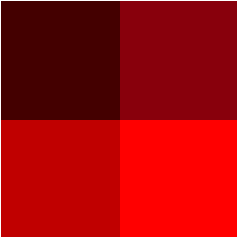
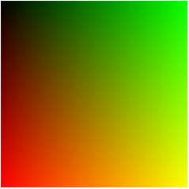

Contents
Summary
The command \bitmapimage is used to produce bitmap image giving color code for each pixel, from left ro right and top to bottom.
Settings
| \bitmapimage[...=...,...]{...} | |
| color | rgb cmyk gray |
| width | dimension |
| height | dimension |
| x | number |
| y | number |
| {...} | number |
| Option | Explanation | ||
|---|---|---|---|
| width |
|
||
| height |
|
||
| x |
|
||
| y |
|
||
| Concatenated strings giving for each pixel, the color code. For example, in rgb mode : "FF0000" for a first red pixel, then "00FF00" for a second green pixel,... At the end you should provide a string like "FF000000FF00..." | |||
Description
Examples
Example 1
-
\bitmapimage[x=2, y=2, width=4cm, height=4cm,color=rgb]{44000088000CC00000FF0000}
- 
With lua, you can obtain all you want
Since you're unlikely to define bitmap images by hand, you'll probably prefer to use lua :-)
-
\startluacode function document.TestBitmap(nx,ny) local r = { } for i=1,nx do for j=1,ny do r[#r+1] = string.format("%02x%02x%02x", math.floor(i/nx*255), math.floor(j/nx*255), 0) end end r = table.concat(r,"\r",1,nx*ny) context(r) end \stopluacode \bitmapimage[x=100,y=100,width=4cm, height=4cm,color=rgb]{\ctxlua{document.TestBitmap(100,100)}} \stoptext
- 